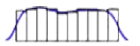

Data Analysis 1: Preliminary analysis
- Descriptive statistics allow us to:
- Describe the characteristics of the sample from which the data was collected (sample/group sizes, mean age etc.)
- Check variables for violations in the assumptions underlying the statistical tests you intend to use
- It is usually valuable to know how many cases belong to each group as defined by your categorical (nominal level) variables
- How many cases are there in each category group?
- Most statistical tests require:
- Roughly equal numbers of cases in each group
- At least 10 cases (but more = better) in all groups…. In order to produce reliable results. A sample of 80+ will surely show you reliable/significant results.
- Use the “Frequencies” command in SPSS to obtain descriptive statistics for categorical variables
- Mean:
- Sum of all values divided by the number of values (N or n)
- Most statistical difference tests are based on this
- Go to analyse, then descriptive stats, frequencies. Click on the bottom stats button. Select mean from Central Tendency, press continue and then ok. The output will follow up.
- Median:
- Mean of two middle values when N is even
- Middle value when N is odd
- Not used much for testing difference
- But a useful summary statistic as it is unaffected by extreme scores
- Mode
- Not very interesting for continuous data.
- More useful for categorical data (nominal and ordinal).
- Range
- Minimum and maximum
- Simple way of identifying outliers (extreme values – unusual events, can be low or high values)
- Used to define sample in the “Method” section of a report
- Standard deviation (SD)
- On average, the numbers in the data set differ from how much from the mean
- In a normal distribution ~68% of values lie within 1 SD of the mean
- For a large enough population sample, many observations will result in a normal (bell shaped curve) distribution of values.
- Many statistical tests assume that data within a variable is distributed normally.
- For a distribution to be normally distributed: mean = median = mode
- Negative Skew
- No Skew
- Positive Skew
- Kurtosis is the statistical measure that tells us when a distribution is more or less peaked than the normal distribution
- A distribution that is less peaked than normal is called platykurtic. (-ve kurtosis)
- A distribution identical to the normal distribution is called mesokurtic. (no kurtosis, infact normal)
- A distribution that is more peaked than normal is called leptokurtic. (+ve kurtosis)
- Negative Kurtosis
- 
- No Kurtosis
- Positive Kurtosis